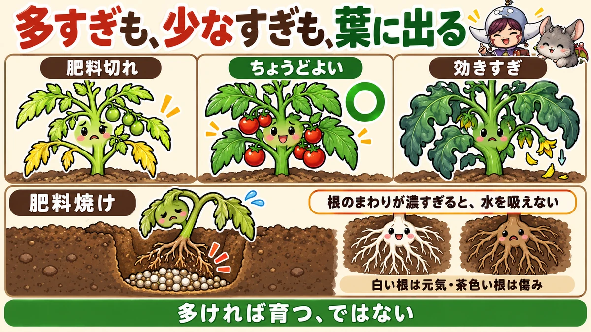
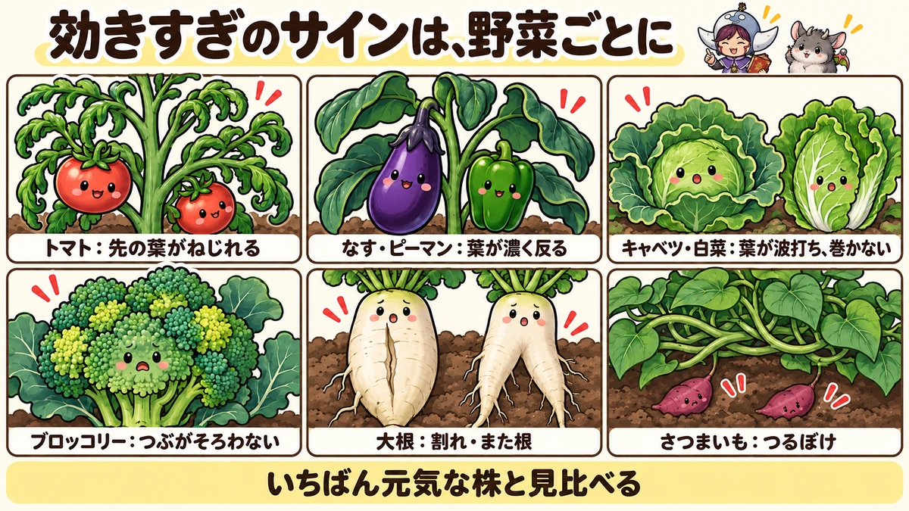
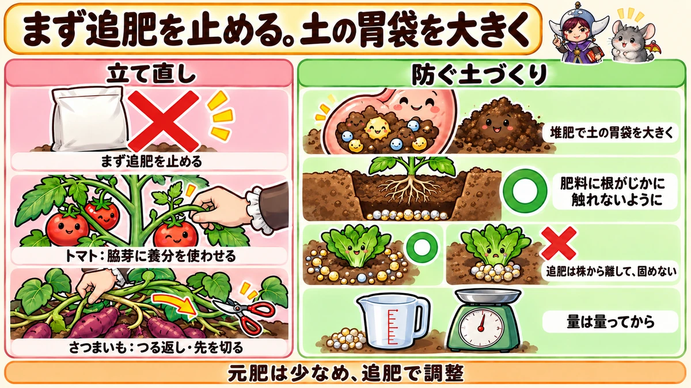

肥料の効きすぎ・肥料焼け 決定版｜葉の色と形で見分けるサイン、野菜ごとの症状、立て直し方
📖 この記事の目次
この記事で分かること
- 肥料は、多ければ多いほど育つわけではありません。効きすぎると、葉ばかり茂って実がつかない、病気や虫が増える、根が傷む、味が落ちる、といった失敗につながります。
- 「肥料焼け」は、根のまわりの肥料が濃くなりすぎて、根が水を吸えなくなり、傷んでしまうことです。植え穴に肥料を入れすぎたときや、株元に追肥を固めて置いたときに起こりやすくなります。
- 効きすぎのサインは、葉の色が濃すぎる（黒っぽい緑）、葉が大きすぎる、葉が波打ったりねじれたりする、茎が太すぎる、つるばかり伸びる、など。
- 肥料切れのサインは、葉の色が淡い、下の葉から黄色くなる、葉が小さい、茎が細い、など。効きすぎと反対です。
- 効きすぎたときは、まず追肥を止めます。そのうえで、野菜ごとに、余分な養分を使わせる工夫をします。
- 肥料の失敗を防ぐには、元肥の量を守ること、追肥は株の様子を見てから決めること、堆肥で「肥料をたくわえる力」のある土にしておくことが大切です。
「元気がないから肥料を足そう」「もっと大きくしたいから多めに入れよう」。家庭菜園では、つい肥料を足したくなります。ところが、葉は青々と茂っているのに実がつかない、白菜が巻かない、大根が割れる、さつまいもがつるばかりで芋がほとんどない。その原因が、実は肥料の効きすぎだった、ということは少なくありません。
肥料は、足りないと育たず、多すぎてもうまく育たない、さじかげんのむずかしいものです。しかも、肥料の効き方は、土の性質や天気、前に育てた野菜によっても変わるので、同じ量を入れても、毎年同じ結果になるとは限りません。けれども、野菜は肥料が多すぎるとき、少なすぎるときに、葉の色や形で、ちゃんとサインを出しています。この記事では、肥料焼けのしくみから、効きすぎと肥料切れの見分け方、野菜ごとのサイン、効きすぎたときの立て直し方、肥料の失敗を防ぐ土づくりまで、順番に書いていきます。
早見：肥料の効きすぎの基本
効きすぎのサイン
- 葉の色が濃すぎる。黒っぽい、どすぐろい緑
- 葉が大きすぎる。茂りすぎて、株の中が暗い
- 葉が波打つ、ねじれる、内側に巻く。表面がでこぼこする
- 茎が太すぎる。先のほうの茎まで太い
- つるや茎ばかり伸びて、花や実がつかない、実が落ちる
- 病気や虫が増える
肥料切れのサイン
- 葉の色が淡い、黄緑色
- 下の古い葉から黄色くなる
- 葉が小さい、茎が細い
- 花の咲く位置が、株の先に近づいてくる（トマトなど）
- 実が小さい、曲がる（きゅうりなど）
肥料焼けのサイン
- 植えた直後や追肥の直後に、苗がしおれて、水をやっても戻らない
- 葉のふちや先が、茶色く焼けたように枯れる
- 根を見ると、茶色く傷んでいる
効きすぎたときにやること
- 追肥を止める
- 野菜ごとに、余分な養分を使わせる工夫をする（脇芽を育てる、つるの先を切る、など）
- 次の作付けでは、元肥を減らし、堆肥をしっかり入れる

肥料の基本をおさらい
3つの主な養分
肥料の袋には、「窒素・リン酸・カリ」の3つの数字が書かれていることが多いです。それぞれ、野菜の育ちの中で、主に次のような役割をしています。
- 窒素：葉や茎を育てる。不足すると葉の色が淡くなり、多すぎると葉ばかり茂る
- リン酸：花や実のつき、根の育ちにかかわる
- カリ：根や茎を丈夫にし、実を太らせる。水分の調整にもかかわる
肥料の効きすぎで問題になることが多いのは、窒素です。葉の色や大きさ、茂り方に、いちばんはっきり表れます。
早く効く肥料、ゆっくり効く肥料
- 早く効く：化成肥料（粒の肥料）、液体の肥料。まいてから比較的すぐに効く。量を間違えると効きすぎや肥料焼けにつながりやすい
- ゆっくり効く：油かす、米ぬか、ぼかし肥料など有機の肥料の多く。土の中の微生物が分解してから効く
- その中間：鶏ふんは、有機の肥料の中では比較的早く効く
早く効く肥料は、少しの量の違いが、すぐに株の様子に表れます。ゆっくり効く肥料は、効きはじめるまで時間がかかるぶん、「効いていない」と思って足してしまい、あとでまとめて効きすぎる、ということが起こりがちです。
肥料ごとの気をつけどころ
- 化成肥料：量を守る。株元に固めて置かない。プランターでは特に少なめに
- 鶏ふん：比較的早く効き、カルシウムも多い。入れすぎると効きすぎる。よく熟したものを使う
- 油かす：窒素が多い。葉物にはよいが、実の野菜や豆、さつまいもには控えめに。分解のときににおいや虫が出ることがある
- 牛ふん堆肥：養分は少なめで、土をふかふかにする役割が中心。肥料というより土づくりの資材
- 米ぬか：窒素は少なめ、リン酸が多い。生のまま株元にまかない
- ぼかし肥料：発酵させてあるので、生の有機物より根を傷めにくい。それでも量は守る
肥料焼けとは
根のまわりの肥料が濃すぎる
肥料は、土の中の水に溶けて、根から吸われます。ところが、根のまわりの肥料が濃くなりすぎると、根は水を吸えなくなり、反対に根の中の水が外へ引き出されてしまいます。その結果、根が傷み、株がしおれて、ひどいときは枯れてしまいます。これが「肥料焼け」です。
塩を土にまくと野菜が育たなくなるのと、よく似たしくみです。肥料も、濃すぎれば、根にとっては毒になります。
起こりやすい場面
- 植え穴の底に、肥料をたくさん入れて、すぐに苗を植えた
- 追肥の肥料を、株元にまとめて置いた
- 化成肥料を、決められた量よりたくさんまいた
- プランターなど、土の量が少ない場所に、肥料を多く入れた
- 雨が少なく、土が乾いているときに、肥料をたくさん入れた
生の有機物によるガス
肥料焼けとは少し違いますが、よく熟していない鶏ふんや、生の米ぬか、油かすなどを、植える直前に土に入れると、分解のときにガスや熱が出て、根を傷めることがあります。有機の肥料は、植える2〜3週間前までに土に混ぜておくと安心です。
根を見て確かめる
しおれた株が肥料焼けかどうか迷ったときは、株元を少し掘って、根を見ます。
- 元気な根：白く、先が細く伸びている
- 肥料焼けや傷んだ根：茶色く、先が黒ずんでいる。新しい白い根が少ない
- まわりの土：肥料の粒が固まって残っていないか、肥料のにおいが強くないか
根が茶色く傷み、近くに肥料のかたまりがあれば、肥料焼けの可能性が高くなります。
肥料焼けを防ぐ
- 元肥は、植える2〜3週間前までに土に混ぜておく
- 植え穴に肥料を入れる場合は、肥料の上に土をかぶせ、根がじかに触れないようにする
- 追肥は、株元から少し離れたところに、まとめて置かず、ばらまいて土と軽く混ぜる
- 決められた量を守る。量は、目分量でなく、一度量っておく
- 追肥のあとは、土が乾いていれば水をやって、肥料をなじませる
効きすぎると何が起きるのか
葉ばかり茂って、実がつかない
肥料の中でも、窒素は、葉や茎を育てる養分です。窒素が効きすぎると、野菜は葉や茎を育てることにばかり力を使い、花を咲かせたり、実を太らせたりすることが後回しになります。トマトやなす、豆の仲間、さつまいもなどで、「葉は立派なのに実がつかない」というときは、窒素の効きすぎを疑います。
病気や虫が増える
窒素が多いと、葉や茎がやわらかく、水っぽく育ちます。病気のかびが入りこみやすく、アブラムシなどの虫にとっても、汁を吸いやすいごちそうの株になります。葉が茂りすぎて風通しが悪くなることも、病気を増やす原因になります。
根の野菜が割れたり、また根になったりする
大根やにんじんは、肥料が効きすぎると、根が急に太ろうとして割れたり、根の先が肥料のかたまりに当たって傷み、何本にも分かれた「また根」になったりします。
味が落ちる
肥料が効きすぎた野菜は、大きく育っても、味がぼやけたり、えぐみが出たり、繊維がかたくなったりすることがあります。
野菜ごとのサイン
トマト
トマトは、株の先のほうを見ると、肥料の効き具合がよく分かります。
- ちょうどよい：先の葉が、ゆるやかに弧を描くように広がる。葉の色は明るい緑。株の先の茎の太さは、シャープペンシルくらい。いちばん上の花と、株の先端との間が、手のひらを広げたくらい
- 効きすぎ：先の葉が、内側にねじれて巻く。葉の色がどすぐろく、表面がでこぼこする。茎が太く、先のほうまで太い。ひどくなると、茎に割れ目や穴があく（めがね茎）。花が落ちやすい
- 肥料切れ：先の葉が小さく、ぴんと立つ。茎が細い。いちばん上の花と株の先端との間が狭くなる
なす、ピーマン
- 効きすぎ：葉の色が濃く、葉が大きく、葉の先が反り返るように曲がる。実がつきにくく、えぐみが出ることがある
- ちょうどよい：葉の色が明るい緑で、葉の大きさがそろっている
- 肥料切れ：葉の色が淡くなり、花の形が悪くなる。実のつきが悪くなる
収穫が続く夏は、2〜3週間に1回の追肥が目安ですが、効きすぎのサインが出ているときは、追肥を休んで様子を見ます。
きゅうり
- 効きすぎ：葉が大きく、色が濃く、茂りすぎる。つるばかり伸びて、実のつきが悪くなる。病気が出やすくなる
- 肥料切れ：葉の色が淡くなり、実が曲がったり、先が細くなったりする。下の葉が黄色くなる
きゅうりは、肥料切れにも弱い野菜です。効きすぎと肥料切れの両方のサインを、見回りのたびに確かめます。
キャベツ、白菜
- 効きすぎ：葉の色が濃い、くすんだ緑（モスグリーン）になり、葉が波打つ。外葉ばかり大きくなって、巻きがゆるい、または巻かない
- ちょうどよい：葉の色がさえた緑で、葉が素直に広がる
巻きがゆるいからといって、追肥を足すと、かえって巻かなくなることがあります。葉の色が濃く、波打っているなら、追肥はせずに様子を見ます。少し遅れても、巻きはじめることがあります。
ブロッコリー
- 効きすぎ：花蕾の表面のでこぼこが大きく、粒がそろわない。花蕾の色にむらが出る。花蕾の中が空洞になることがある
- ちょうどよい：花蕾の粒が細かくそろい、色が均一
大根、にんじん
- 効きすぎ：葉が大きく広がりすぎる。根が割れる、また根になる、肌が荒れる、繊維がかたい
- 肥料切れ：根が太らず、ひょろりと細い
大根は、土の中の養分を集める力が強い野菜です。元肥を多く入れすぎないほうが、形のよい大根になります。葉が大きすぎる大根は、効きすぎのサインです。
さつまいも（つるぼけ）
- 効きすぎ：葉の色が濃く、大きく、つるが太く、ぐんぐん伸びる。芋が太らない。これを「つるぼけ」と言います
- ちょうどよい：葉の色が明るい緑で、つるの伸びが落ちついている
さつまいもは、もともと肥料をほとんど要らない野菜です。元肥を入れていなくても、前に育てた野菜の肥料が土に残っていて、つるぼけになることがあります。
豆の仲間
えだまめ、いんげん、えんどう、そら豆などの豆の仲間は、根に住む菌の力で、空気中の窒素を養分にできます。そのため、窒素の肥料が多すぎると、葉やつるばかり茂って、花や実がつきにくくなります。元肥はごく控えめにします。
玉ねぎ、ねぎ
窒素が多すぎると、葉がひょろひょろと伸びて、べと病などの病気にかかりやすくなります。玉ねぎは、追肥の止めどきを過ぎて肥料が効いていると、玉のしまりが悪く、保存中に傷みやすくなります。
ほうれん草、小松菜などの葉物
葉物は、窒素をよく使う野菜ですが、多すぎると、葉が大きくやわらかく、水っぽくなり、虫がつきやすくなります。土が肥料を抱えておく力が弱いと、肥料の濃さが急に高くなって、根が傷み、育ちが悪くなることもあります。
かぼちゃ、すいか
かぼちゃやすいかも、さつまいもと同じように、窒素が多いとつるばかり伸びる「つるぼけ」になりやすい野菜です。葉が大きく茂り、雌花が咲いても実がつかない、ついても落ちてしまう、ということが起こります。元肥は控えめにし、実がついて太りはじめてから追肥をする、という順番にすると、つるぼけを防ぎやすくなります。
じゃがいも
窒素が多すぎると、茎や葉ばかりが大きく茂り、芋が小さいまま、ということがあります。茂りすぎた株は、葉が倒れて蒸れ、病気も出やすくなります。元肥は袋の量を守り、芽かきと土寄せのときの追肥も控えめにします。
とうもろこし
とうもろこしは、肥料をよく使う野菜です。肥料切れになると、葉の色が淡くなり、実の先まで粒が入らないことがあります。一方で、元肥をまとめて入れすぎると、根を傷めることもあるので、元肥と追肥に分けて入れます。
いちご
いちごは、根が肥料の濃さに弱い野菜です。植えつけのときに元肥を入れすぎたり、株元に追肥を固めて置いたりすると、根が傷んで、株が弱ることがあります。追肥は、株から少し離して、少量を何回かに分けて入れます。

見回りでの確かめ方
肥料の効き具合を確かめるときは、次の順で見ていきます。
1．同じ畑の、同じ野菜の株を、何株か並べて見比べる
2．葉の色：さえた緑か、どすぐろい緑か、淡い黄緑か
3．葉の大きさと形：大きすぎないか、波打ったりねじれたりしていないか
4．茎：太すぎないか、細すぎないか。トマトなら株の先の茎
5．花や実：花が落ちていないか、実のつき方はどうか
6．下の葉：黄色くなっていないか
7．気になる株があれば、株元の土を少し掘って、根と土の湿り気を見る
1回の見回りで決めつけず、1週間ほど様子を見て、変化を確かめてから判断すると、間違いが減ります。
効きすぎたときの立て直し方
まず、追肥を止める
効きすぎのサインが出たら、まず追肥を止めます。追肥の予定日でも、株の様子が効きすぎなら、その回は休みます。肥料は、野菜が吸ったり、雨で流れたりして、時間とともに減っていきます。
トマト：脇芽に養分を使わせる
トマトで効きすぎのサインが出たときは、ふだんは小さいうちに摘む脇芽を、すぐには摘まずに少し大きく育ててから摘む、という方法があります。脇芽が育つときに養分を使うので、余分な肥料を減らすことができます。主枝を2本にする仕立てにして、養分を分散させる方法もあります。
株の先が止まってしまった場合は、花の下から伸びている勢いのある脇芽を1本残して、そちらに伸びる役目を引き継がせます。
さつまいも：つるを返す、先を切る
つるぼけ気味のさつまいもは、地面に伸びたつるを持ち上げて、つるの節から出ている根を土から離し、ひっくり返しておきます（つる返し）。つるが土から養分を吸うのを減らすことができます。
暑い時期のつる返しが大変な場合は、伸びすぎたつるの先を切る方法もあります。勢いが強い株なら、先を切っても大きな問題はありません。支柱やネットにつるを上へ伸ばして、地面に根を下ろさせない方法もあります。
大根：次の作付けで調整する
大根は、育ってしまってから立て直すのはむずかしい野菜です。次の作付けで、次のことを試します。
- タネを多めにまいて、少し混みあい気味に育てる。株の数が多いと、土の中の肥料をみんなで吸うので、1本あたりの効きすぎがやわらぐ
- 土を深く掘って上下を入れかえる（天地返し）。肥料の残っている表面の土と、肥料の少ない下の土を入れかえる
なす、ピーマン：収穫を早めに進める
効きすぎで葉が茂りすぎたなすやピーマンは、追肥を休み、ついている実を早め早めに収穫して、株に実を育てる仕事をさせます。混みあった枝や葉を整理して、株の中に光と風を入れると、病気の予防にもなります。
豆の仲間：花が咲くまで待つ
窒素の効きすぎで茂った豆の仲間は、追肥をせずに、花が咲くのを待ちます。つるが伸びすぎた場合は、先を摘んで、わきから出る枝に花をつけさせる方法もあります。
キャベツ、白菜：待つ
効きすぎで巻きがゆるいときは、追肥をせずに待ちます。葉の色が落ちついてくると、少し遅れて巻きはじめることがあります。
水やりで肥料を流すか
プランターで明らかに肥料を入れすぎた場合は、たっぷり水をやって、鉢底から水が流れ出るようにし、土の中の余分な肥料を少し洗い流す方法があります。畑では、水で肥料を流す効果は限られるうえ、水のやりすぎで根を傷めることもあるので、無理に流そうとはしません。
肥料切れのときは
サインを確かめてから足す
葉の色が淡い、下の葉から黄色くなる、葉が小さい、といった肥料切れのサインが出たら、追肥をします。ただし、葉が黄色くなる原因は、肥料切れだけではありません。
- 水のやりすぎや、水はけの悪さで根が傷んでいる
- 水不足
- 寒さや暑さ
- 病気や虫
土を少し掘って、根の様子や、土の湿り気を確かめてから、追肥をするかどうかを決めます。根が傷んでいるときに肥料を足すと、かえって肥料焼けを起こすことがあります。
寒さで葉の色が変わることも
秋から冬にかけて、キャベツやブロッコリー、白菜などの葉が、紫っぽく色づくことがあります。これは、多くの場合、寒さに当たったことによるもので、肥料の不足とは限りません。気温が上がると、元の色に戻ることもあります。冬の葉の色の変化を見て、すぐに肥料を足さないようにします。
足すときは少しずつ
肥料切れだからといって、一度にたくさん足すと、今度は効きすぎや肥料焼けになります。決められた量を、何回かに分けて足し、株の様子を見ながら調整します。
液体の肥料を使うとき
液体の肥料は、水やりといっしょに与えられ、早く効くのが特徴です。そのぶん、濃さを間違えると、すぐに肥料焼けにつながります。
- 表示どおりの倍率にうすめる。「早く効かせたいから濃く」はしない
- 土が乾ききっているときは、先に水をやって土を湿らせてから与える
- 与える間隔を守る。毎回の水やりで与えない
- 葉にかけるタイプのものも、表示の倍率と回数を守る
プランターや育苗中の苗など、土が少ない場所では、表示よりさらにうすめに使うと安心です。
季節ごとに気をつけること
春の植えつけ
- 元肥は植える2〜3週間前までに。植え穴への入れすぎに注意
- 夏野菜の苗は、植えてから根づくまでの間に、追肥をしない
- さつまいもや豆の仲間の場所は、前の作付けの肥料が残っていないか考える
夏
- 収穫が続く野菜は、2〜3週間に1回の追肥が目安。ただし、効きすぎのサインがあるときは休む
- 雨が少なく土が乾いているときに、肥料をたくさん入れない。肥料が溶けずに残り、あとで雨が降ったときに一度に効くことがある
秋冬
- 秋冬野菜は、植えつけから育ちざかりにかけて肥料を使う。結球のころに効きすぎると巻きがゆるくなる
- 寒くなると、野菜が肥料を吸う量が減る。冬の追肥はごく少なめに
冬の土づくり
- 空いた場所に堆肥を入れて、土の「胃袋」を大きくしておく
- 前の年の失敗（効きすぎ、肥料切れ）を栽培の記録から振り返り、次の年の元肥の量を決める
プランターの肥料
土が少ないぶん、効きすぎやすい
プランターは土の量が限られているので、同じ量の肥料でも、畑より濃くなりやすく、効きすぎや肥料焼けが起こりやすくなります。一方で、水やりのたびに肥料が流れ出るので、肥料切れも起こりやすい、という難しさがあります。
- 市販の野菜用の培養土には、はじめから肥料が入っているものが多い。袋の表示を確かめ、元肥を足しすぎない
- 追肥は、少ない量を、こまめに
- 液体の肥料は、表示どおりにうすめる。濃くしない
- 葉の色や形の変化を、畑よりこまめに見る
肥料の失敗を防ぐ土づくり
堆肥で「肥料をたくわえる力」をつける
土には、肥料を抱えこんでたくわえておく力があります。この力が大きい土は、肥料を入れても急に濃くなりにくく、雨で流れ出しにくくなります。人にたとえると、胃袋が大きいようなものです。
この力を大きくするのが、堆肥や腐葉土などの有機物です。有機物が分解されてできる「腐植」が、肥料を抱えこむはたらきをします。有機物の少ないやせた土は、胃袋が小さく、少し肥料を入れすぎただけで濃くなりすぎ、肥料焼けを起こしやすくなります。毎年堆肥を入れるのは、この胃袋を大きくするためでもあります。
前の作付けの肥料を考える
前に育てた野菜に多く肥料を入れていると、次の野菜を植えるときにも、土に肥料が残っていることがあります。特に、さつまいもや豆の仲間など、肥料を控えたい野菜を植えるときは、前の野菜で肥料をたくさん使っていなかったかを思い出します。栽培の記録をつけておくと役に立ちます。
元肥は少なめ、追肥で調整
元肥を最初から多く入れると、あとから減らすことはできません。元肥は控えめにして、足りない分は、株の様子を見ながら追肥で足すほうが、失敗が少なくなります。
肥料を止める時期を知っておく
野菜によっては、収穫が近づいたら追肥をやめる時期があります。
- 玉ねぎ：春の追肥の止めどきを過ぎて肥料が効いていると、玉のしまりが悪く、保存中に傷みやすくなる
- 大根、にんじん：根が太りはじめてから追肥を重ねると、割れや肌荒れにつながる
- 葉物：収穫の直前に追肥をすると、葉がやわらかく水っぽくなり、傷みやすくなる
「いつまで追肥するか」を、植えるときに決めておくと、効きすぎを防げます。
記録をつける
何に、いつ、どの肥料を、どれだけ入れたか。そして、そのとき株がどうなったか。これを簡単にメモしておくと、次の年の失敗がぐっと減ります。
- 元肥の種類と量
- 追肥の日付と量
- 葉の色や形の変化、気づいたこと
- 収穫の量や、割れ、つるぼけなどの失敗
同じ場所で、前の年にどの野菜を育て、どれだけ肥料を入れたかが分かれば、次に植える野菜の元肥を決めやすくなります。
量は、量ってから
「ひと握り」の量は、人によってずいぶん違います。肥料の袋に書かれた量を目安に、はかりや計量カップで一度量っておき、自分の手で何杯分かを覚えておくと、まきすぎを防げます。

説明が分かれるところ
有機の肥料なら、効きすぎないか
有機の肥料は、ゆっくり効くので、効きすぎにくい、と言われることがあります。たしかに、化成肥料よりは急に効きにくいものが多いのですが、量が多ければ、有機の肥料でも効きすぎや肥料焼けは起こります。鶏ふんのように比較的早く効くものもあります。「有機だから安心」とは考えず、量を守ります。
効きすぎたトマトは、水を減らすか
肥料が効きすぎて茂りすぎたトマトは、水を控えると、株の勢いが落ちつく、という考え方があります。一方で、水を控えすぎると実が割れたり、尻腐れが出たりする心配もあります。まずは追肥を止め、脇芽で養分を使わせる方法から試すのが無難です。
無肥料で育てるか
前の作付けの肥料が残っている土なら、さつまいもや豆の仲間は、肥料を入れずに育てる人もいます。一方、やせた土で無肥料にすると、育ちが悪くなります。土の状態によって答えが変わるので、株の様子を見ながら判断します。
よくある失敗
元気がないので、肥料を足した
元気がない原因が、根の傷みや水の加減だった場合、肥料を足すとかえって悪くなります。原因を確かめてから足します。
植え穴に肥料を入れて、すぐ植えた
根が肥料にじかに触れて、肥料焼けを起こします。肥料の上に土をかぶせるか、植える前に時間をおきます。
追肥を株元に固めて置いた
株元の肥料が濃くなりすぎて、根を傷めます。株から少し離して、ばらまいて混ぜます。
巻かない白菜に、追肥をした
葉の色が濃く波打っているなら、効きすぎで巻かないのかもしれません。追肥はせずに待ちます。
さつまいもに、ほかの野菜と同じだけ元肥を入れた
つるぼけになって、芋が太りません。さつまいもは、元肥をごく少なく、または入れずに育てます。
よくある質問
葉の色が濃いのは、元気な証拠ではないのですか
健康な葉は、その野菜らしい、さえた緑色をしています。黒っぽい、どすぐろい緑になっているときは、肥料、特に窒素が効きすぎていることが多いです。同じ野菜の、元気な株の葉の色と見比べてみてください。
プランターで肥料焼けしました。どうすればいいですか
たっぷり水をやって、鉢底から水を流し、土の中の余分な肥料を少し洗い流します。そのうえで、しばらくは追肥をせず、日陰で株を休ませます。根が大きく傷んでいる場合は、新しい土に植え替えることも考えます。
肥料を入れすぎた畑は、どのくらいで元に戻りますか
雨の量や土の性質、育てる野菜によって違うので、はっきりした期間は言えません。肥料を多く使う野菜（葉物やとうもろこしなど）を育てて養分を吸わせる、深く掘って上下の土を入れかえる、堆肥を入れて土の「胃袋」を大きくする、といった方法で、少しずつ整えていきます。次の作付けでは、元肥を減らすか、入れずに始めて、株の様子を見ながら追肥で調整すると安心です。
肥料の袋の量は、そのまま守ればいいですか
袋に書かれた量は、一般的な目安です。土に堆肥がたっぷり入っている、前の作付けの肥料が残っている、といった場合は、少なめから始めます。株の様子を見ながら調整してください。
土の養分を測る道具は役に立ちますか
土の酸っぱさや、肥料の濃さの目安を測る、家庭向けの簡単な道具や検査の仕組みがあります。毎年肥料の失敗が続く場所や、前の作付けの肥料がどれだけ残っているか分からない場所では、一度測ってみると、元肥の量を決める手がかりになります。ただ、数字だけで決めず、実際の野菜の様子とあわせて判断します。
肥料焼けした苗は、元に戻りますか
根の傷みが軽ければ、追肥を止めて、土が乾きすぎないように水をやっていると、新しい根が伸びて回復することがあります。数日たっても、しおれたまま新しい葉が出てこない場合は、根が大きく傷んでいるので、予備の苗に植え替えることも考えます。植え替える場合は、肥料の濃い場所を避けて植えます。
雨のあとに追肥するのはよいですか
雨のあとは、土が湿っているので、肥料が溶けて根に届きやすくなります。ただし、大雨の直後で土がぬかるんでいるときは、作業で土を踏み固めてしまうので、少し乾いてから行います。反対に、大雨の直前に追肥すると、肥料が流れてしまうことがあります。
ほうれん草が、ところどころ育ちません
ほうれん草は窒素をよく使う野菜ですが、土の「胃袋」が小さい畑に肥料を多く入れると、肥料が濃くなりすぎて根が傷み、ところどころ株が育たず、すき間だらけになることがあります。酸性の土にも弱いので、石灰で土の酸っぱさを整え、堆肥をしっかり入れてからタネをまきます。
効きすぎかどうか、迷います
同じ畑の、同じ野菜の、元気に育っている株と見比べるのがいちばんです。葉の色、葉の大きさ、葉の形（波打つ、ねじれる）、茎の太さを比べてみてください。迷うときは、追肥を1回休んで、様子を見るのが安全です。
学ぶ：肥料のしくみ🔬
なぜ、濃すぎる肥料で根が傷むのか
水は、濃さの薄いほうから濃いほうへ移ろうとする性質があります。根の中の水よりも、根のまわりの土の水のほうが肥料で濃くなると、水は根の中から外へ引き出されてしまいます。根は水を吸えなくなるどころか、根の中の水まで失って、しおれて傷みます。なめくじに塩をかけると縮むのと、同じしくみです。
なぜ、窒素が多いと実がつきにくいのか
植物は、手に入る養分と光で作った栄養を、葉や茎を育てることと、花や実を育てることに振り分けています。窒素がたっぷりあると、植物は「まだまだ体を大きくできる」と、葉や茎を育てることを優先します。花を咲かせ、実をつけるのは、体がある程度育ち、養分の勢いが落ちついてきてからです。窒素が効きすぎると、この切りかえが遅れ、いつまでも葉や茎ばかり伸びることになります。
なぜ、肥料切れは下の葉から黄色くなるのか
窒素は、植物の体の中で移動させることができる養分です。肥料が切れて、根から吸える窒素が足りなくなると、植物は、古い下の葉にたくわえていた窒素を、これから育つ新しい葉へ移します。窒素を抜き取られた下の葉は、緑の色を保てなくなり、黄色くなっていきます。
下の葉から順に黄色くなるのは、植物が「若い葉を優先して守っている」しるしなのです。反対に、新しい葉ばかり色が悪い、葉の一部に斑点が出る、といった場合は、窒素の不足とは別の原因（ほかの養分の不足や、病気、寒さなど）を考えます。
なぜ、堆肥を入れると肥料の失敗が減るのか
土の中の腐植や粘土の粒は、表面に、肥料の成分をくっつけておく力を持っています。肥料を入れると、その一部が粒の表面にくっついて、土の水の中の濃さが急に上がるのを防ぎます。そして、野菜が養分を吸って水の中の濃さが下がると、粒の表面から少しずつ離れて、水の中に戻っていきます。こうして、腐植の多い土は、肥料の濃さを一定に保つ、ゆとりのある土になるのです。
まとめ
ここまで読んでくださって、ありがとうございます！
肥料の効きすぎ・肥料焼けのポイントを、もう一度まとめておきます。
- 肥料は多ければよいわけではない。効きすぎると、実がつかない、病気や虫が増える、根が割れる、味が落ちる
- 肥料焼けは、根のまわりの肥料が濃すぎて、根が水を吸えなくなること。植え穴や株元の入れすぎに注意
- 効きすぎのサインは、葉の色が濃すぎる、葉が大きい、波打つ・ねじれる、茎が太い、つるばかり伸びる
- 肥料切れのサインは、葉の色が淡い、下の葉から黄色い、葉が小さい、茎が細い
- トマトは株の先の葉と茎、キャベツや白菜は葉の色と波打ち、さつまいもはつるぼけを見る
- 効きすぎたら、まず追肥を止める。トマトは脇芽に養分を使わせる、さつまいもはつる返しや先を切る
- 葉が黄色いときは、肥料切れ以外の原因も確かめてから足す
- 堆肥で土の「胃袋」を大きくすると、肥料の失敗が減る。元肥は少なめ、追肥で調整
- 肥料焼けか迷ったら、根の色を見る。白い根は元気、茶色く黒ずんだ根は傷んでいる
- 液体の肥料は表示どおりにうすめる。濃くしない
肥料は、野菜の様子を見ながら加減するものです。袋の量や、人から聞いた量は、あくまで出発点です。まずは今度の見回りで、いちばん元気な株と、気になる株の葉の色と形を見比べてみてください。野菜が出しているサインが、きっと見えてきます🌿
牛ふん堆肥
養分は少なめで、土の「胃袋」を大きくする役割が中心。毎年入れると、肥料の濃さが急に上がりにくい土になります。
![[商品価格に関しましては、リンクが作成された時点と現時点で情報が変更されている場合がございます。]](https://hbb.afl.rakuten.co.jp/hgb/55e75fe5.20db4cd1.55e75fe7.d1ec32cc/?me_id=1194164&item_id=10000517&pc=https%3A%2F%2Fthumbnail.image.rakuten.co.jp%2F%400_mall%2Fgardening%2Fcabinet%2Fhiryousennyouhiryo%2Fdsc_2803.jpg%3F_ex%3D240x240&s=240x240&t=picttext "[商品価格に関しましては、リンクが作成された時点と現時点で情報が変更されている場合がございます。]")

腐葉土
土をふかふかにし、肥料をたくわえる力を高めます。堆肥といっしょに冬の土づくりに。

鶏ふん
比較的早く効く有機の肥料。効きすぎやすいので、袋の量を守り、株元に固めて置かないようにします。
![[商品価格に関しましては、リンクが作成された時点と現時点で情報が変更されている場合がございます。]](https://hbb.afl.rakuten.co.jp/hgb/55e7612a.7de1526b.55e7612b.01a50904/?me_id=1214866&item_id=10002182&pc=https%3A%2F%2Fthumbnail.image.rakuten.co.jp%2F%400_mall%2Fkaju%2Fcabinet%2F00714580%2F03462454%2F07486601%2Fimgrc0071643813.jpg%3F_ex%3D240x240&s=240x240&t=picttext "[商品価格に関しましては、リンクが作成された時点と現時点で情報が変更されている場合がございます。]")


次に読む
記事一覧へ